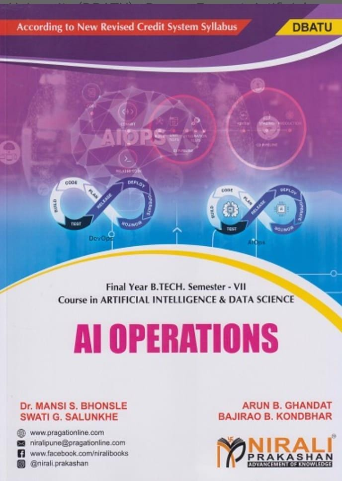

📚 Research Papers
- 📄 Paper pulished on "Enhancing Geographic Information System (GIS) Accessibility Through Voice Commands and NLP" in Journal For Basic Sciences
- 📄 Paper published on “Advanced End-to-End Image Encryption and Compression” in [Journal/Conference Name]
- 📄 Paper published on “Human Skin Disease Detection using Machine Learning” in International Journal of Scientific Research in Engineering and Management (IJSREM)
- 📄 Paper published on “AI ROBOTIC ARM TO PICKUP AND DROP PARCELS” in International Research Journal of Modernization in Engineering Technology and Science.
- 📄 Paper published on “Chronic kidney diseases detection using ML” in Science & Engineering Journal.
- 📄 Paper published on “EVDrive – Your Reliable EV Journey Companion” in NOVYI MIR Research Journal.
- 📄 Paper published on “Pricing Influenced by Machine Learning Online Retailers' Optimization for Dynamic Pricing: A survey
- 📄 Paper published on “An efficient ring routing protocol to energy reduction & load minimization in WSN” in the International Journal IJARCCE
- 📄 Paper published on “A Review of various Energy efficient mobile sink routing protocols for WSN” in International Journal IJCET.
©️ Copyrights
📖 Book Published
AI Operations
in Nirali Prakashan
This book explores the integration of Artificial Intelligence into IT operations, covering techniques and tools for proactive system management.
